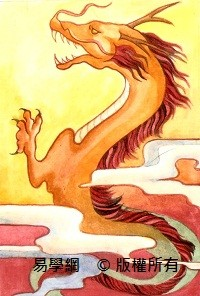
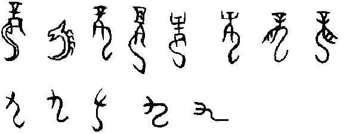
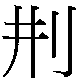
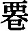
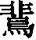
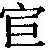
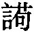

1 乾卦 乾為天
【經文】乾，元亨利貞。初九，潛龍勿用。九二，見龍在田，利見大人。九三，君子終日乾乾，夕惕若，厲无咎。九四，或躍在淵，无咎。九五，飛龍在天，利見大人。上九，亢龍有悔。用九，見群龍无首，吉。
【卦名】
今本：乾 帛書：鍵 歸藏：乾 清華簡：倝 象傳：健 海昏：建
乾與倝
《說文》：「乾，上出也，从乙。乙，物之達也，倝聲。」段注：「此乾字之本義也，自有文字以後，乃用為卦名，而孔子釋之曰健也。健之義生於上出，上出為乾，下注則為溼，故乾與溼相對。俗別其音，古無是也。」
乾意思原為「上出」，引申為「乾濕」的乾。段玉裁認為，自有文字以來，「乾」就是做為卦名，孔子以「健」解釋乾，這層意義是從「上出」而來。後來乾之「上出」又與「下注為溼」相對，而以「乾」為「乾溼」的「乾」。後世為區別做為卦名的乾，以及乾濕的乾，於是採用了不同的音，古代並無區別。
清華簡乾卦卦名作「倝」，《說文》：「乾，音倝」，「倝，日始出，光倝倝也。」乾與倝不只形近，而且古時音同。倝今讀為「幹」，與「乾濕」的乾讀音也非常相近。因此倝與乾不只可以相互假藉，甚至倝也可能是比乾卦更古老的卦名。乾為上出，剛健，倝則為太陽剛升起而光明照耀的樣子。乾從倝從乙，乙為「物之達」，則乾有天光照遍萬物之義。
《左傳》莊公二十二年陳厲公為陳完問筮，得觀之否，周史曰：「坤土也，巽風也，乾天也，風為天於土上，山也。有山之材，而照之以天光。」此取乾象為天光，亦符合「倝」的意義。
健、鍵、建
乾的卦名也做「健」或「鍵」、「建」。有強健、關鍵、建立之義。
《象傳》：「天行健，君子以自強不息。」依《象傳》的標準體例，「天行」是卦象描述，「健」是卦名。如坤卦：「地勢坤，君子以厚德載物。」震卦：「洊雷震，君子以恐懼脩省。」艮卦：「兼山艮，君子以思不出其位。」乾卦之外的六十三卦皆如此表達，因此乾卦理應也是依此體例。
《說卦傳》：「乾，健也。」《彖傳》也是以健解釋乾。傳統詮釋《象傳》「天行健」都將「健」字做為卦德而不是卦名，但這除了不符合《象傳》體例之外，帛書與海昏簡的出土也印證了「健」之為卦名，而不是卦德。
帛書乾卦作「鍵」，鍵與健形近，皆建聲。而海昏侯竹簡《易占》則作「建」。
鍵為關鍵之鍵，《說文》：「鍵，鉉也，一曰車轄。」段注：「謂鼎扃也。以木橫關鼎耳而舉之，非是則既炊之鼎不可舉也，故謂之關鍵，引申之為門戶之鍵閉。門部曰：關，以木橫持門戶也。門之關猶鼎之鉉也。」鍵，原為鼎鉉，鼎憑藉以抬起的地方，如果沒有鼎鉉就無法舉起鼎，鼎就沒有用處。鍵之於鼎，類似於門戶的「關」，即門閂鎖。此即「關鍵」之義，意指這是開啟易道的關鍵。
《繫辭傳》：「闔戶謂之坤，闢戶謂之乾，一闔一闢謂之變，往來不窮謂之通。」參照帛書之後此段作：「闔戶謂之川，闢戶謂之鍵，一闔一闢謂之變，往來不窮謂之通。」，「闢戶」即「開啟門戶」的意思，鍵為鍵閉、門閂，為開啟門戶之關鍵。
海昏竹簡乾卦作建，建與健、鍵音同形近。建為建立、月建、斗建的建。《說文》：「建，立朝律也。」《繫辭傳》「乾坤成列，而易立乎其中矣」、「立天之道曰陰與陽」。建即立的意思，代表該卦乃易道之建立。天體運轉永不止息，創造萬物。古人也從日升日落，月之盈虧、寒來暑往而有日、月、年的觀念。因此天行健又關乎曆法與朝綱之建立。
建也是星名，建星共有六顆，在南斗的北邊。《史記‧天官書》：「南斗為廟，其北建星。建星者，旗也。」《正義》：「建六星，在斗北，臨黃道，天之都關也。斗建之間，七耀之道，亦主旗輅。」這六顆星也是七耀（日、月、火星、木星、水星、金星、土星）的關鍵通道。
【卦義】
乾卦上下二體皆乾，象天體運行永不止息，故以「健」為名。六畫純陽，也是易道創生之根源，因此彖稱「乾元」。
全卦以「龍」為意象，剛健為德性；以變化、彈性為吉應；過高、剛強好勝、頑固為大忌。
為何乾卦以龍為象？傳統易學皆依《說卦傳》，以震為龍，但乾卦並無震象。易學家為湊出龍象，用盡心機，仍難得其解。例如來知德注解乾卦初九：「此爻變巽錯震，亦有龍象，故六爻即以龍言之。」此或可證初九之為潛龍，但九五飛龍在天呢？其實龍象很簡單，就是筮數的九，這也可能是古代以數為象的遺痕。
帛書《易之義》：「鍵也者八卦之長也，九也者六肴之大也。為九之狀，浮首兆下，蛇身僂曲，亓為龍類也。」鍵卦是八卦之長，而九則是筮數中最大的，「九」字的形狀，浮動的頭朝下，身體像蛇一樣卷曲，與龍算是同類。觀「九」的甲骨文與金文，有如簡化之後的「龍」，如下圖，為劉興隆《新編甲骨文字典》中所收錄的龍字與九字：

以九為龍象的傳統其實很早，《清華簡．筮法》的爻象，就以九為它（蛇）為大獸，符合《易之義》中對於九的描述，也符合《說文》「鱗蟲之長」的定義。
《說文》：「龍，鱗蟲之長，能幽，能明，能細，能巨，能短，能長。春分而登天，秋分而潛淵。」
龍是古代被神話的一種大獸，乾卦六爻中的龍因為不同的時機而各有不同的形態變化，有如君子能因時而變，懂得權變之道，在不同的時機有不同的做為。應當潛藏時就潛藏（初九潛龍勿用），當現則現（九二見龍在田）。
「春分而登天，秋分而潛淵」像是在描繪蒼龍七宿的天文現象，因此有現代學者認為六爻講的即是蒼龍七宿在天空中的相對位置。如「春分而登天」即是「龍抬頭」的天文現象，也是乾卦九二的「見龍在田」。相較之下初九為蒼龍七宿還在地平線之下的時候，所以說「潛龍」。九五則是立秋前後，蒼龍七宿飛騰在整個天空的時候，所以說「飛龍在天」。
龍也是「寵」的意思。甲骨文中龍作寵用，《說文》段注引《毛詩蓼蕭傳》曰：「龍，寵也，謂龍即寵之叚借也。」乾卦的龍，象徵的即是天寵。因六爻皆陽，陽為實，意謂此卦天賦滿實。
得乾卦，萬事俱備，但要懂得因時制宜。問事短期難成，因上下皆乾，有能量但無發揮空間。具備一切先天條件，但仍待後天，或者天時及地利之機會。
得此卦者具備先天的優勢，擁有一切良好的條件，其人自有源源不絕的創造力，資源與能力都不是問題，問題在於時機。能夠守住自己既有的美德，只待時機的成熟，自可水到渠成。
若問財利，乾為金玉，有金玉滿堂之象。若問運勢，乾為強健。
乾卦為「六位時成」之卦，因此六爻之時機大致皆依《繫辭傳》所言：
其初難知，其上易知，本末也。初辭擬之，卒成之終。若夫雜物撰德，辨是與非，則非其中爻不備。噫！亦要存亡吉凶，則居可知矣。知者觀其彖辭，則思過半矣。二與四同功而異位，其善不同，二多譽，四多懼，近也。柔之為道，不利遠者，其要无咎，其用柔中也。三與五同功而異位，三多凶，五多功，貴賤之等也。其柔危，其剛勝邪。
其初難知，初爻因狀況未明，天寵未現，所以潛藏而勿用。二多譽，天寵已現，因此利見大人。三為多凶咎的人爻，所以君子終日乾乾，夕惕若，厲乃得无咎。四多懼，因此要多所嘗試，力求突破。或躍在淵的躍字像是在隱喻懼。五多功，乃飛龍在天，且利見大人。乾上之易知，在於過亢，高而無位，動而成兌，因此有悔。
【經文註解】
乾，元亨利貞。
- 《彖》曰：大哉乾元，萬物資始，乃統天。雲行雨施，品物流形，大明終始，六位時成，時乘六龍以御天。乾道變化，各正性命，保合大和，乃利貞。首出庶物，萬國咸寧。
- 《象》曰：天行健，君子以自強不息。
- 《文言》曰：元者善之長也，亨者嘉之會也，利者義之和也，貞者事之幹也。君子體仁足以長人，嘉會足以合禮，利物足以和義，貞固足以幹事。君子行此四德者，故曰：乾，元亨利貞。 ○乾元者始而亨者也，利貞者性情也。乾始能以美利利天下，不言所利，大矣哉。大哉乾乎，剛健中正，純粹精也；六爻發揮，旁通情也；時乘六龍，以御天也；雲行雨施，天下平也。
- 帛書《易之義》（衷）：子曰：鍵六剛能方，湯武之德也。「潛龍勿用」者，匿也。「見蠪在田」也者，德也。「君子冬日鍵鍵」，用也。「夕沂若，厲无咎」， 息也。「或躍在淵」，隱［而］能靜也。「飛蠪在天」，□而上也。「炕龍有悔」，高而爭也。「群龍无首」，文而聖也。
- 《二三子》：二厽子問曰：「易屢稱于龍，龍之德何如？」孔子曰：「龍大矣。龍（形遷），叚賓于帝，俔神聖之德也。高尚齊虖星辰日月而不眺，能陽也；下綸窮深潚之潚而不沫，能陰也。上則風雨奉之，下綸則有天下之時。［斿］乎深淵，則魚蛟先後之，水流之物莫不隋從。陵處，則雷神養之，風雨辟鄉，鳥守弗干。」曰：龍大矣。 龍既能雲變，有能蛇變，有能魚變，鳥正虫，唯所欲化，而不失本，神能之至也。□□□□□□□□□□□焉，有弗能察也。知者不能察亓變，辯者不能察亓美，至巧不能象亓文。明目弗能察視也。□□焉。化虫神貴之容也。天下之貴物也。曰：龍大矣。□之馴德也。曰利見□□□□易□□和，爵之曰君子。戒事敬命，精白柔和，而不諱賢，爵之曰夫子。 或大或小，亓方一也。至周者也，而名之曰君子。兼「黃常」近之矣；尊威精白，堅強行之，不可撓也，「不習」近之矣。
【今譯】大善而嘉會合禮，宜於堅定守正。
元亨：原義為元首聚餐。元為元首，引申為美善之大者，《文言》：「元者善之長也。」善之大者稱元。《易經》有「元亨」、「元吉」，並無「元咎」、「元凶」，因為元只可用以稱美善之事。《文言》：「亨者嘉之會也。」亨為美善之聚會、匯合。元亨為大美大善之匯聚。一般將「元」解釋為原始、原本、大的意思。亨為亨通，元亨即大亨通。但「大亨通」意思與「吉」似乎無異，容易造成誤解，在《周易》中凶卦亦有「元亨」之占，顯然解釋為「大亨通」較不洽當，容易造成混淆。ppp
利貞：貞為正、定、貞固（堅持）等意思。「利貞」即利於正、利於貞固、宜於堅定。或者可解釋為有利之後而能夠堅定。「元亨利貞」意謂已經匯聚了美善條件，不需外求，宜於守住自己既有的美德，堅定自己的德性。或者可解釋為，具備最大之美善，能夠匯聚美善則可得利而貞定。貞有時也可解釋作問，就是卜問，但《周易》中的「利貞」不宜解釋作卜問。《說文》：「貞，卜問也，从卜，貝以為贄。」段注：「大卜：凡國大貞。大鄭云：貞，問也。國有大疑，問於蓍龜。後鄭云：貞之為問，問於正者，必先正之，乃從問焉。引易師貞丈人吉。」貞與一般的卜問有別，大事用「貞」，因此說「凡國大貞」，「國有大疑，問於蓍龜」。後鄭說：「貞為問，問於正者，必先正之，乃從問焉。」由於大事才用「貞」問，或許因此之故，在程序上更為隆重，而有「必先正之」的程序，這可能就是後來將貞解釋為「正」的原因，《彖傳》皆以正來解釋貞。又貞字與古鼎同字，有時為區別而在鼎上加卜字，貞本字為上卜下鼎，貝乃鼎字的簡化而來，許慎「貝以為贄」的解釋應改為「鼎以為贄」。鼎有「定」義，因此貞字可做為「堅定」解釋。
- 孔穎達：《子夏傳》云：「元，始也。亨，通也。利，和也。貞，正也。」言此卦之德，有純陽之性，自然能以陽氣始生萬物而得元始亨通，能使物性和諧，各有其利，又能使物堅固貞正得終。
- 程頤：乾者萬物之始，故為天，為陽，為父，為君。元亨利貞謂之四德。元者萬物之始，亨者萬物之長，利者萬物之遂，貞者萬物之成。惟乾坤有此四德，在他卦則隨事而變焉。故元專為善大，利主於正固。亨貞之體，各稱其事。四德之義，廣矣大矣。
- 朱震：乾，健也。元，始也；亨，通也，升降往來，周流六虛而不窮者也；利者，得其宜也；貞者，正也。初九、九三、九五，正也；九二、九四、上九，變動，亦正也。
- 朱熹：元，大也。亨，通也。利，宜也。貞，正而固也。文王以為乾道大通而至正，故於筮得此卦，而六爻皆不變者，言其占當得大通，而必利在正固，然後可以保其終也。此聖人所以作《易》，教人卜筮，而可以開物成務之精意。
- 楊萬里：周子曰：元亨誠之通，利貞誠之復。復者何？復其元而已。元者貞之初，貞者元之終，元貞異名而同體。亨者物之生，利者物之成。亨利異功而同用。渾然而一之謂元，熙然而散之謂亨，充然而成之謂利，肅然而收之謂貞。
- 俞琰：其占為始雖大通，又宜固守以正，然後可保其終。蓋不可恃其健而妄動也。
初九，潛龍，勿用。
- 《象》曰：潛龍勿用，陽在下也。
- 《文言》曰：初九曰「潛龍勿用」，何謂也？子曰：龍德而隱者也，不易乎世，不成乎名，遯世無悶，不見是而無悶，樂則行之，憂則違之，確乎其不可拔，潛龍也。 ○潛龍勿用，下也。 ○潛龍勿用，陽氣潛藏。 ○君子以成德為行，日可見之行也，潛之為言也，隱而未見，行而未成，是以君子弗用也。君子學以聚之，問以辨之，寬以居之，仁以行之。
- 帛書《二三子》：易曰：「寑龍勿用。」孔子曰：「龍寑矣而不陽，時至矣而不出，可謂寑矣。大人安失矣而不朝，猒在廷，亦猶龍之寑也。亓行滅而不可用也，故曰「寑龍勿用」。（按：寑通潛。）
- 《易之義》：易曰：「潛龍勿用」、「炕龍有悔」，言亓過也。物之上擳而下絕者，不久大立，必多亓咎。
【今解】潛藏的龍，切勿有任何作為。
養精畜銳的時候，凡事應當潛沉，靜待時機，切勿躁進。
【字義】潛龍：初爻為「地下」的位置。易卦有六爻，上二爻為天，下二爻為地，中二爻為人。初爻為「地下」，二爻為「地上」。初九陽潛藏在地下，故曰「潛龍」。龍也可解釋為「寵」，潛龍即潛在的榮寵。榮寵未明，因此不宜動作。《繫辭傳》：「其初難知」、「初辭擬之」。初爻乃難知之位，凡事皆處於事態未明之時。
勿用：用為施行，行事、行動之意。勿用意謂諸事不宜行動，不應有所作為。
- 干寶：陽處三泉之下，聖德在愚俗之中，此文王在羑里之爻也。雖有聖明之德，未被時用，故曰「勿用」。
- 孔穎達：潛者，隱伏之名；龍者，變化之物。
- 程頤：乾以龍為象。龍之為物，靈變不測，故以象乾道變化，陽氣消息，聖人進退。初九在一卦之下，為始物之端，陽氣方萌。聖人側微，若龍之潛隱，未可自用，當晦養以俟時。
- 朱熹：潛，藏也。龍，陽物也。初陽在下，未可施用，故其象為潛龍。其占曰勿用。凡遇乾而此爻變者，當觀此象，而玩其占也。
九二，見龍在田，利見大人。
- 《象》曰：見龍在田，德施普也。
- 《文言》曰：九二曰「見龍在田，利見大人」，何謂也？子曰：龍德而正中者也。庸言之信，庸行之謹，閑邪存其誠，善世而不伐，德博而化。易曰「見龍在田，利見大人」，君德也。 ○見龍在田，時舍也。 ○見龍在田，天下文明。 ○易曰，見龍在田，利見大人，君德也。
- 《易之義》：易曰：「見龍在［田，利］見大人。」 子曰：「君子之德也。君子齊明好道，日自見以待用也。見勇則僮，不見用則靜。」（按：僮，動也。）
- 《二三子》：卦曰：「見龍在田，利見大人。」孔子曰：「見［龍在田］□□□回，卑嗛易告也，就民易遇也，聖人君子之貞也。度民宜之，故曰利以見大人。」
【今解】龍出現在田間，利於去拜見大人物。
龍已出現在田間，象徵事情已出現端倪，可以不再潛藏。這時最好能積極主動，求見有權位的大人。
九二為龍離隱出藏的時候，喻君子準備入世行事，有所作為，因此開始遊走四方，拜會大人。
【字義】見龍在田：兩種解釋。一是見解釋為見到，見到龍出現在田裡。二是見解釋為「現」，龍出現在田間。二位為「地上」，九在二，即龍在地上，故曰「見龍在田」。龍亦可作為寵，榮寵已見，那麼當然利於見大人。《繫辭》：「二多譽。」二乃多譽之位，因此利見大人而可得嘉譽。
大人：同君子，意指有道德或有官位的人。以今日社會狀態理解，也就是「德高望重」之人，或是官員，或是公司中的主管職，社會中之賢達。
- 鄭玄：二於三才為地道，地上即田，故稱「田」也。
- 王弼：出潛離隱，故曰見龍；處於地上，故曰在田。德施周普，居中不偏，雖非君位，君之德也。初則不彰，三則乾乾，四則或躍，上則過亢。利見大人，唯二、五焉。
- 干寶：陽在九二，十二月之時，自臨來也。二為地上，田在地之表，而有人功者也。陽氣將施，聖人將顯，此文王免於羑里之日也。故曰「利見大人」。
- 孔穎達：陽處二位，故曰九二。陽氣發見，故曰見龍。田是地上可營為有益之處，陽氣發在地上，故曰在田。且一之與二，俱為地道，二在一上，所以稱田。
- 程頤：田，地上也。出見於地上，其德已著。以聖人言之，舜之田漁時也。利見大德之君，以行其道。君亦利見大德之臣，以共成其功。天下利見大德之人，以被其澤。大德之君，九五也。乾坤純體，不分剛柔，而以同德相應。
- 朱熹：九二雖未得位，而大人之德已著，常人不足以當之，故值此爻之變者，但為利見此人而已。
九三，君子終日乾乾，夕惕若，厲无咎。
- 《象》曰：終日乾乾，反復道也。
- 《文言》曰：九三曰「君子終日乾乾，夕惕若，厲无咎」，何謂也？子曰：君子進德修業。忠信，所以進德也，修辭立其誠，所以居業也，知至至之可與幾也，知終終之可與存義也。是故居上位而不驕，在下位而不憂。故乾乾因其時而惕，雖危无咎矣。 ○終日乾乾，行事也。 ○終日乾乾，與時偕行。 ○九三，重剛而不中，上不在天，下不在田，故乾乾因其時而惕，雖危无咎矣。
- 帛書易傳《二三子》：卦曰：「君子終日鍵鍵，夕沂若，厲无咎。」孔子曰：「此言君子務時，時至而動□□□□□屈力以成功，无日中而不止，時年至而不淹。君子之務時，猷馳驅也，故君子終日鍵鍵。時盡而止之以置身，置身而靜，故曰夕沂若，厲无咎。」
- 《易之義》：易曰：「君子冬日鍵鍵，夕沂若，厲无咎。」子曰：「知息也，何咎之有？人不淵不躍則不見，□淵不□（不淵不躍）不用而反居亓□□。」
【今解】君子整日努力不懈怠，埋頭苦幹，夜晚更要自我反省警惕，雖然艱難困苦，但不會有罪咎。
九二見龍在田，君子離隱入世，開始與大人接洽。九三為君子開始做事，但凡事起頭難，因此「終日健健，夕惕若」。若能夠忍受艱難困苦，則能免於罪咎。反之，若是怠慢以對，那麼就會有罪咎。
三與四爻位置不上不下，下無田宅可以安居樂業，上無高位可以享其尊榮，因此都是憂、懼之位。三、四也是三才中的「人」位，「乾乾」、「夕惕若」「厲無咎」也代表著做人的困難。
九三經文有很多種讀法，例如孔穎達根據王弼注讀為「夕惕若厲，无咎」。俞樾甚至修改經文並讀為「終日乾乾，終夕惕惕，若厲，无咎」。《說文》引作「夕惕若夤」。「厲」是《易經》中常見的吉凶占辭，應獨立一句：「夕惕若，厲，无咎」。或可與无咎連讀為「厲无咎」。厲近於「凶」，《易傳》中解釋為「危險」，也可解釋為艱難、艱困。厲也常與其他占辭共用，如「貞厲」、「厲无咎」、「厲无大咎」、「厲吉」。《文言傳》「故乾乾因其時而惕，雖危无咎矣」亦可為證。
《繫辭》：「三多凶。」三為多凶之位，其要在得无咎。無咎者乃有咎者，善補過才可得無咎。「君子終日乾乾，夕惕若，厲」為君子補過而能免於罪咎之條件。
【字義】乾乾：即「健健」，三居下乾（健）與上乾（健）之間，故曰「健健」，努力不懈之義。終日乾乾，整日努力不懈怠。
夕惕若：惕為警惕，憂慮恐懼。六爻中三原本就是多憂、多凶的位置，故曰「惕」。夕惕若，君子至夜自我反省警惕。若為助辭。帛書作「夕沂若」，並以止息、休息來解釋。意謂至夜則休息，君子當止則止之義。
厲无咎：兩種解釋。一是厲為危、危險、危厲。《文言》「雖危无咎矣」，雖危險但沒有罪咎。《繫辭》曰「三多凶」，三爻是多凶之位，故曰「厲」。二是厲為「礪」的本字，原本為磨刀石，即今日砥礪、磨練之義，引申為艱難之磨練。《易經》彖辭有「厲吉」，因此將厲解釋為「危險」不是非常洽當。應當解釋為砥礪較佳。「无咎」也是吉凶之占辭，原本應有咎，善補過則可免於罪咎。「厲无咎」，有所砥礪則能免於罪咎，若過於怠忽則有罪咎。厲，《說文》引作夤，解釋為警惕：「夤，敬惕也，从夕寅聲。《易》曰：夕惕若夤。」
- 鄭玄：三於三才為人道。有乾德而在人道，君子之象。
- 王弼：處下體之極，居上體之下，在不中之位，履重剛之險。上不在天，未可以安其尊也。下不在田，未可以寧其居也。純修下道，則居上之德廢；純修上道，則處下之禮曠。故終日乾乾，至於夕惕猶若厲也。居上不驕，在下不憂，因時而惕，不失其幾，雖危而勞，可以无咎。
- 虞翻：謂陽息至三，已變成離。離為日，坤為夕。
- 荀爽：日以喻君。謂三居下體之終，而為之君，承乾行乾，故曰「乾乾」。夕惕以喻臣，謂三臣於五，則疾修柔順，危去陽行，故曰「无咎」。
- 干寶：爻以氣表，繇以龍興，嫌其不關人事，故著君子焉。陽在九三，正月之時，自泰來也。陽氣始出地上，而接動物。人為靈，故以人事成天地之功者，在於此爻焉。故君子以之憂深思遠，朝夕匪懈。仰憂嘉會之不序，俯懼義和之不逮。反復天道，謀始反終。故曰「終日乾乾」。此蓋文王反國大釐其政之日也。凡无咎者，憂中之喜，善補過者也。文恨早耀，文明之德，以蒙大難，增修柔順，以懷多福，故曰「无咎」矣。
- 孔穎達：以陽居三位，故稱九三；以居不得中，故不稱大人；陽而得位，故稱君子。在憂危之地，故終日乾乾，言每恒終竟此日，健健自強，勉力不有止息。夕惕者，謂終竟此日後，至向夕之時，猶懷憂惕。若厲者，若，如也；厲，危也。言尋常憂懼，恒如傾危，乃得无咎。謂既能如此戒慎，則無罪咎，如其不然，則有咎。故《繫辭》云：「无咎者，善補過也。」此一爻，因陽居九三之位，皆以人事明其象。
- 程頤：三雖人位，已在下體之上，未離於下而尊顯者也。舜之玄德升，聞時也。日夕不懈而兢惕，則雖處危地而无咎。在下之人而君德已著，天下將歸之，其危懼可知。雖言聖人事，苟不設戒，則何以為教？作《易》之義也。
- 朱熹：重剛不中，居下之上，乃危地也。然性體剛健，有能乾乾惕厲之象，故其占如此。君子，指占者而言。言能憂懼如是，則雖處危地而无咎也。
九四，或躍在淵，无咎。
- 《象》曰：或躍在淵，進无咎也。
- 《文言》曰：九四曰「或躍在淵，无咎」，何謂也？子曰：上下无常，非為邪也。進退无恒，非離群也。君子進德修業，欲及時也，故无咎。 ○或躍在淵，自試也。 ○或躍在淵，乾道乃革。 ○九四，重剛而不中，上不在天，下不在田，中不在人，故或之。或之者疑之也，故无咎。
- 《易之義》：易曰：「或躍在淵，无咎。」子曰：「恒躍則凶。君子躍以自見，道以自成。君子窮不忘達，安不忘亡，靜居而成章，首福又皇。」
【今解】或許能夠躍出深不見底的水潭，沒有罪咎。
九三開始積極行事，終日忙碌不已，整日努力不懈，勞心勞力。到九四則是嘗試突破、蛻變的時候，因此說「或」，代表不確定。「躍」為突破的舉動，「或躍」就是嘗試突破現狀，因此《文言》說「或躍在淵，自試也」、「乾道乃革」。
然而九四在上卦之下，下卦之上，不上不下，突破還只是個嘗試，未必成功，頂多只能免於罪咎。得此爻，人當力爭上游，多所嘗試，不要怕困難與失敗，雖有進退兩難的窘境，但痛苦乃是成長的必經階段，至少可以免於罪咎。
【字義】或躍在淵：言在深水中嘗試飛躍，準備下一階段的「飛龍在天」。比喻君子開始準備大展身手，多所嘗試練習。或，疑辭，代表不確定，可翻譯作「可能」、「或許」。躍，跳躍，飛躍。淵，深水。帛書易傳：「龍既能雲變，有能蛇變，有能魚變。」此爻以「魚變」之龍為喻，因此說「或躍在淵」。《繫辭》：「四多懼。」四為多懼之位，躍字隱喻君子之所懼。
- 王弼：去下體之極，居上體之下，乾道革之時也。上不在天，下不在田，中不在人，履重剛之險，而无定位所處，斯誠進退无常之時也。近乎尊位，欲進其道，迫乎在下，非躍所及。欲靜其居，居非所安，持疑猶豫，未敢決志。用心存公，進不在私，疑以為慮，不謬於果，故无咎也。
- 干寶：躍者，暫起之言，既不安於地，而未能飛於天也。四以初為應。淵，謂初九甲子，龍之所由升也。或之者，疑之也。此武王舉兵孟津，觀釁而退之爻也。守柔順，則逆天人之應；通權道，則違經常之教。故聖人不得已而為之，故其辭疑矣。
- 孔穎達：或，疑也。躍，跳躍也。言九四陽氣漸進，似若龍體欲飛猶疑，或也。躍在於淵，未即飛也。此自然之象，猶若聖人位漸尊高欲進於王位，猶豫遲疑，在於故位，未即進也。云「无咎」者，以其遲疑進退，不即果敢以取尊位，故无咎也。若其貪利務進，時未可行而行，則物所不與，故有咎也。若周西伯內執王心，外率諸侯以事紂也。
- 程頤：淵，龍之所安也。或，疑辭，謂非必也。躍不躍，惟及時以就安耳。聖人之動，无不時也。舜之歷試，時也。
- 朱熹：或者，疑而未定之辭。躍者，無所緣而絕於地，特未飛爾。淵者，上空下洞，深昧不測之所。龍之在是，若下於田，或躍而起，則向乎天矣。九陽四陰，居上之下，改革之際，進退未定之時也。故其象如此，其占能隨時進退，則无咎也。
九五，飛龍在天，利見大人。
- 《象》曰：飛龍在天，大人造也。
- 《文言》九五曰「飛龍在天，利見大人」，何謂也？子曰：同聲相應，同氣相求。水流濕，火就燥，雲從龍，風從虎。聖人作而萬物覩，本乎天者親上，本乎地者親下，則各從其類也。 ○飛龍在天，上治也。 ○飛龍在天，乃位乎天德。 ○夫大人者，與天地合其德，與日月合其明，與四時合其序，與鬼神合其吉凶。先天而天弗違，後天而奉天時，天且弗違，而況於人乎？況於鬼神乎？
- 《易之義》：易曰：「飛蠪在天，利見大人。」子曰：天□何有亓□□□□□□人尉文而溥，齊明而達矣。此以剸名，孰能及［乎］！
- 《二三子》：卦曰：「蜚龍在天，利見大人。」孔子曰：此言君子□□□□□□□君子在上，則民被亓利，賢者不蔽，故曰蜚龍在天，利見大人。」
【今解】飛翔的龍在天上，利於見有德位的大人。
五為六爻中最為尊貴的位置，故有「九五之尊」的成語，言陽九居於五位，也是「天下」的君位。五為天位，故曰「在天」。喻君子以極高的才能，而身居尊位。此爻「利見大人」與九二有不一樣的意義。九二為出潛謀始之時，遊說四方。九五之利見大人，已居尊位。《繫辭》：「五多功。」五乃君子功成之時。
龍亦象徵寵，飛龍在天亦有受到極高之榮寵的意思。
- 鄭玄：五於三才為天道。天者，清明无形，而龍在焉，飛之象也。
- 王弼：不行不躍而在乎天，非飛而何？故曰飛龍也。龍德在天，則大人之路亨也。夫位以德興，德以位敘，以至德而處盛位，萬物之覩，不亦宜乎？
- 虞翻：謂四已變，則五體離。離為飛，五在天，故「飛龍在天，利見大人」也。謂若庖犧觀象於天，造作八卦，備物致用，以利天下，故曰「飛龍在天」。天下之所利見也。
- 干寶：此武王克紂正位之爻也。聖功既就，萬物既覩，故曰「利見大人」矣。
- 程頤：進位乎天位也。聖人既得天位，則利見在下大德之人，與共成天下之事。天下固利見夫大德之君也。
- 朱熹：剛健中正以居尊位，如以聖人之德，居聖人之位。故其象如此，而占法與九二同，特所利見者在上之大人爾。若有其位，則為利見九二在下之大人也。
上九，亢龍有悔。
- 《象》曰：亢龍有悔，盈不可久也。
- 《文言》上九曰「亢龍有悔」，何謂也？子曰：貴而无位，高而无民，賢人在下位而无輔，是以動而有悔也。 ○亢龍有悔，與時偕極。 ○亢之為言也，知進而不知退，知存而不知亡，知得而不知喪，其唯聖人乎！知進退存亡而不失其正者，其唯聖人乎。
- 《繫辭》：「亢龍有悔」，子曰，貴而无位，高而无民，賢人在下位而无輔，是以動而有悔也。
- 帛書《二三子》：易曰：「抗龍有悔。」孔子曰：「此言為上而驕下，驕下而不怡者，未之有也。人之立正也，若遁木，俞高俞畏下，故曰杭龍有悔。」
- 《易之義》：易曰「炕蠪有悔」。大人之義不實於心，則不見於德；不單于口，則不澤於面。能威能澤，胃之蠪。
【今解】過高的龍，會有悔恨。
亢原指頸部或咽喉，後引申為高的意思，今言「高亢」即為此義。《說文》：「亢，人頸也，从大省，象頸脈形。」段注：「《史》、《漢》〈張耳列傳〉『乃仰絕亢而死』，韋昭曰：亢、咽也…亢之引申為高也、舉也、當也。」亢龍，意指居高位的龍，此有高傲之意。過猶不及，五位是飛龍在天，已至尊位。上位則過高，反而有危險。《文言》「貴而无位，高而无民」，意指上九雖高貴但無權位，且無人民之擁戴，以此而動，必有悔恨。
《周易》重中庸，以二、五為吉。即使貴為人君，亦以五為極。上已過高而遠民。
- 王肅：窮高曰亢。知進忘退，故悔也。
- 干寶：亢，過也。乾體既備，上位既終。天之鼓物，寒暑相報；聖人治世，威德相濟；武功既成，義在止戈。盈而不反，必陷於悔。
- 孔穎達：上九亢陽之至大而極盛，故曰亢龍。此自然之象。以人事言之，似聖人有龍德，上居天位，久而亢極，物極則反，故有悔也。純陽雖極，未至大凶，但有悔吝而己。《繫辭》云：「悔吝者，言乎其小疵也。」故鄭引堯之末年，四凶在朝，是以有悔未大凶也。凡悔之為文，既是小疵，不單稱悔也。必以餘字配之。其悔若在，則言有悔，謂當有此悔，則此經是也。其悔若无，則言悔亡，言其悔已亡也。
- 程頤：九五者，位之極中正者。得時之極，過此則亢矣。上九至於亢極，故有悔也。有過則有悔。唯聖人知進退存亡而无過，則不至於悔也。
- 朱熹：亢者，過於上而不能下之意也。陽極於上，動必有悔，故其象占如此。
用九，見群龍无首，吉。
- 《象》曰：用九，天德不可為首也。
- 《文言》曰：乾元用九，天下治也。 ○乾元用九，乃見天則。
- 《二三子》：卦曰：「見群龍无［首］，吉。」孔子曰：「龍神威而精，處□而上通其德，无首□□□□□見群龍无首者□□君子□□□□□□□□□□□□見君子之吉也。」
- 《二三子》：易曰：「見群蠪无首。」子曰：「讓善之胃也。君子群居，莫敢首，善而治，何<言疾>亓和也？龍不侍光而僮，无階而登，［聖］□ 人與蠪相似，何［不］吉之有？此鍵之羊說也。
【今解】見到一整群的龍，沒有元首。吉。
「用九」為乾卦六爻皆變，也就是得到「乾之坤」卦，則以「用九」為占斷。
六爻皆變，為六龍（群龍）無首之象。乾龍為純陽之物，最忌剛上加剛，以適變、中庸為宜，若在物首則反而過亢。因此群龍而無一龍可為首，無首則吉。《文言》以「天下治」稱之，則用九乃天下太平之象。天下太平則賢人出，有如群龍飛舞而無一為首。
另有人會以「神龍見首不見尾」來詮釋「無首」，於文義較差。
- 《說苑‧至公》：易曰：「無首，吉。」此蓋人君之至公也。夫以公與天下，其德大矣。
- 王弼：九，天之德也。能用天德，乃見群龍之義焉。夫以剛健而居人之首，則物之所不與也。以柔順而為不正，則佞邪之道也。故乾吉在无首，坤利在永貞矣。
- 陸績：見眾聖人，無自尊之意，則可以統御群才矣。
- 程頤：用九者，處乾剛之道，以陽居乾體，純乎剛者也。剛柔相濟為中，而乃以純剛，是過乎剛也。見群龍，謂觀諸陽之義，无為首則吉也。以剛為天下先，凶之道也。
- 朱熹：用九，言凡筮得陽爻者，皆用九而不用七。蓋諸卦百九十二陽爻之通例也。以此卦純陽而居首，故於此發之。聖人因繫之辭，使遇此卦而六爻皆變者，即此占之。蓋六陽皆變，剛而能柔，吉之道也，故為「群龍无首」之象，而其占為如是則吉也。《春秋傳》曰：「乾之坤曰：見群龍无首，吉。」蓋即純坤卦辭「牝馬之貞，先迷後得，東北喪朋」之意。
- 日講：无首，謂變剛為柔。 ○體乾之道者，當思陽極則亢，而濟之以柔，以善其用。如羣龍之剛，皆在于首，惟能變剛為柔，則其首不露，而其用不測。
用九：帛書作「迵九」。迵，音洞，通達也。
【彖傳注】
大哉乾元，萬物資始，乃統天。雲行雨施，品物流形，大明終始，六位時成，時乘六龍以御天。乾道變化，各正性命，保合大和，乃利貞。首出庶物，萬國咸寧。
大哉乾元，萬物資始，乃統天：解釋「元」。
大哉乾元：《九家易》：「陽稱大。六爻純陽，故曰大。乾者純陽，眾卦所生，天之象也。觀乾之始，以知天德，惟天為大，惟乾則之，故曰大哉。元者，氣之始也。」
《文言傳》：「元者善之長也。」周易六十四卦只有乾坤兩卦符合「善之長」的條件，因此《彖傳》分別以「大哉乾元」，「至哉坤元」讚嘆兩卦。《周易》以陽為大，陰為小，大即乾卦之別稱。
萬物資始，乃統天：荀爽：「謂分為六十四卦，萬一千五百二十策，皆受始於乾也。策取始於乾，猶萬物之生稟於天。」《九家易》：「乾之為德，乃統繼天道，與天合化也。」
乾陽為萬物生命藉以開始的元氣，因此說「萬物資始」。《易經》六十四卦總計384爻，384爻共有11520策，以成萬之數象徵天地間的萬物。乾坤生11520策，象徵陰陽演生萬物。乾卦象徵天道，因此說「乃統天」。
11520策算法：384爻有一半為陰，一半為陽。陽爻得數為9（或7），陰爻得數為6（或8）。揲蓍法中筮數計算為每數有四策（揲之以四），九之數為36策，八之數為32策，七之數為28策，六之數為24策。
傳統以六為陰，九為陽，384爻總策數為：
6 x 4 x 384/2 + 9 x 4 x 384/2 = 11520
若以新出土資料來驗證，當以七為陽，八為陰，384爻總策數為：
7 x 4 x 384/2 + 8 x 4 x 384/2 =11520
雲行雨施，品物流形。大明終始，六位時成，時乘六龍以御天：解釋「亨」。《文言傳》：｢亨者嘉之會。」嘉會而亨，具體而言，乾之嘉會有二，一是旁通而與坤嘉會。二是六位之時成，乾元與爻位（六位）之嘉會。《文言傳》：「六爻發揮，旁通情也。」荀爽：「乾起坎，而終於離。坤起於離，而終於坎。離坎者，乾坤之家，而陰陽之府，故曰大明終始也。」「六爻隨時而成乾。」
雲行雨施，品物流形：虞翻：「已成既濟，上坎為雲，下坎為雨，故雲行雨施。乾以雲雨，流坤之形，萬物化成，故曰品物流形也。」益卦《彖傳》：「天施地生。」若依虞翻註解，應該改成「已成既濟、未濟」，上坎為雲是為既濟，下坎為雨是為未濟。上坎為雲下坎為雨是《大象傳》的取象，《彖傳》並不如此區分，《彖傳》屯、解兩卦的註解可為證。
天道博施，地道廣生。雲行雨施講的是天道博施，品位流形則是坤承天道而廣生，萬物流動而賦形，滋長而繁茂。傳統易學家有一種理論認為，《周易》中雨象徵的是陰陽調和，這是就結果上來說。就原因來說，雨象徵的是乾天陽氣在地上的流形。這是「天施地生」的過程。就卦之演變來說，乾坤旁通尚未成既濟和未濟的歷程，在此歷程中先成復與小畜、豫與姤，再成屯與家人、解與鼎。屯與解兩卦為坤體受陽，就是「雲行雨施，品物流形」的兩卦，屯與解卦彖傳分別說「雷雨之動滿盈，天造草昧」、「天地解而雷雨作，雷雨作而百果草木皆甲坼」。小畜卦彖傳說：「剛中而志行，乃亨。密雲不雨，尚往也；自我西郊，施未行也。」「志行」講的是九二勢在必行，將與復卦旁通，成屯卦而成「天施地生」之功。「密雲不雨，尚往也」指的是乾卦九四已行成復，但九二未行而尚未「雲行雨施」，即後文講的「施未行」。因此「尚往」，宜往而施行，往則雲行雨施，品物流形。
大明終始，六位時成，時乘六龍以御天：孟喜：「天子駕六。」古代天子馬車駕六典故源自於此。乾為大明，六爻皆陽，即大明終始，終始乃有始有終之義。六位時成者，乾道因時而變。《孟子萬章篇》：「孔子，聖之時者也。」筮者數也，《周易》乃占筮之書，古代以筮數為占。帛書《易之義》：「鍵也者八卦之長也，九也者六肴之大也。為九之狀，浮首兆下，蛇身僂曲，亓為龍類也。」《周易》的龍取象自筮數九，並以九象徵乾道之變化。九在六爻因時而變，即六位時乘。
乾道變化，各正性命，保合大和，乃利貞：解釋「利貞」。
首出庶物，萬國咸寧：劉瓛：「陽氣為萬物之所始，故曰首出庶物。立君而天下皆寧，故曰萬國咸寧也。」庶者眾也，庶物即萬物。乾為萬物大始，故曰「首出庶物」。
《彖傳》的這段註解在《文言傳》中也有所詮釋：「乾元者，始而亨者也。利貞者，性情也。乾始而以美利利天下，不言所利，大矣哉。大哉乾乎，剛健中正，純粹精也。六爻發揮，旁通情也。時乘六龍，以御天也。雲行雨施，天下平也。」萬國咸寧，可能講的是乾坤旁通成屯與家人，《彖傳》屯卦：「宜建侯而不寧。」不寧者，丕寧。家人卦：「正家，而天下定矣。」
報告老師，此兩句是否需要修訂？
開始與大人接帢洽
原本應有咎，善補過則可免於無咎
感謝！已修改
已修改了。感謝幫忙。
歸藏？
請問「今本：乾 帛書：鍵 【歸藏】：乾 清華簡：倝」是指清馬國翰所收集的歸藏嗎？
請參考書的頁首
是的。
凡例加註在全書的頁首。
誤繕
「九''三''經文有很多種讀法」，誤繕成九二